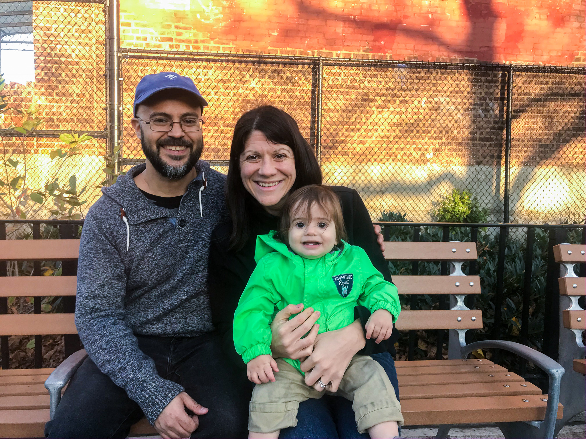
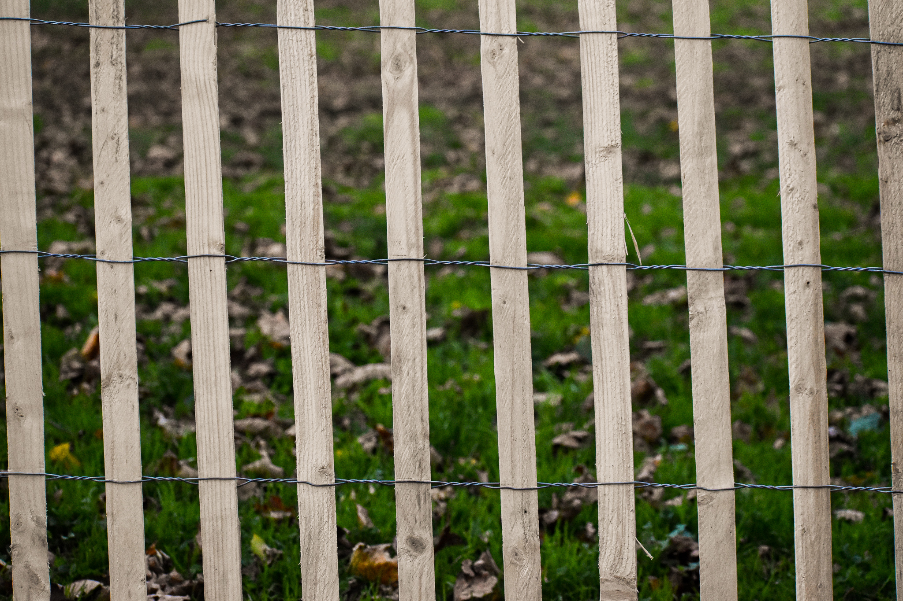
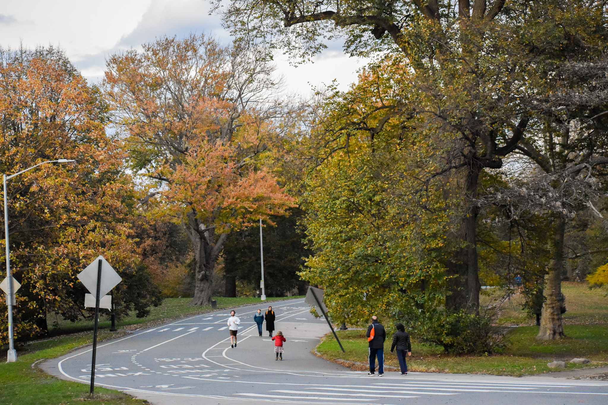
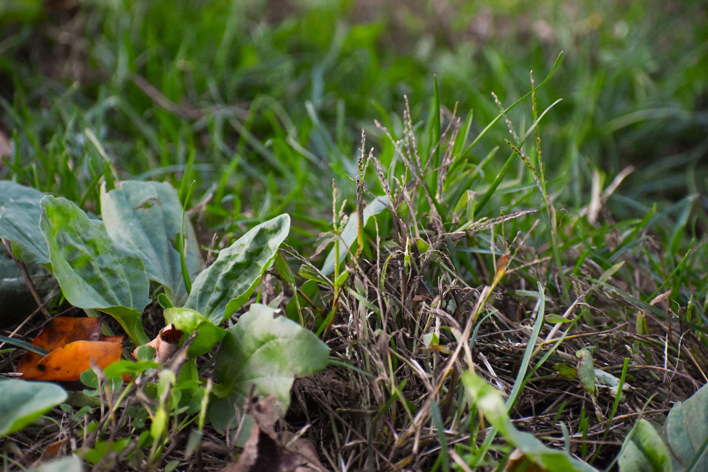
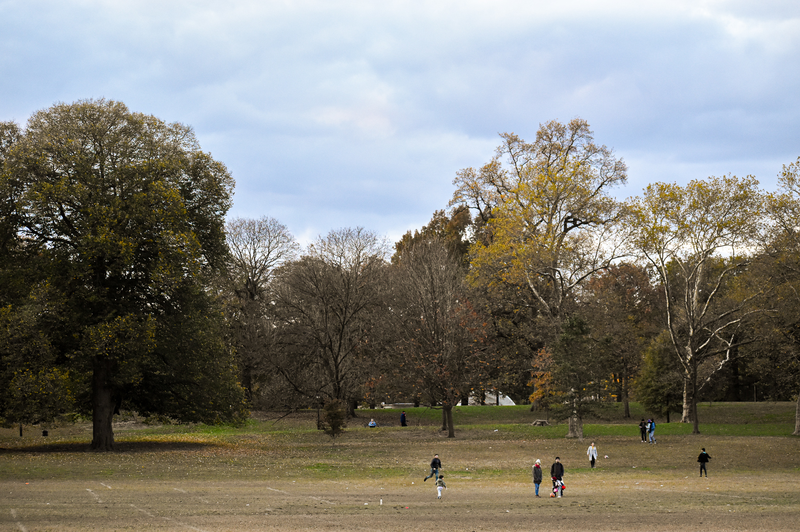

Brooklyn Families Search for Green Space in a Sea of Rubber and Concrete
Words, photographs, and chart by Katie Herchenroeder
Eli Fernandez, 1-year-old and sporting a bright green jacket inscribed with “Adventure Expert,” loves running and falling into everything. His parents, Liz and Nathan, have to watch him closely in the park near their home because there is no grass there - only metal, rubber, and sidewalk.
Nathan and Liz Fernandez with their son Eli at DiGilio Playground in Brooklyn. They just celebrated Eli’s birthday in Prospect Park last week in the big open lawn. Wanting a place with area to run around, they made the journey to the 526 acre refuge. (Katie Herchenroeder/ NYC News Service)
“We live in an apartment that’s not that big and he needs space to run around,” Mr. Hernandez said as his wife helped Eli climb on the DiGilio Playground off of Avenue F.
The Fernandezs are just one of thousands of families in Brooklyn’s 14th community district that do not have enough access to green space. Brooklyn 14, comprised of Ditmas Park, Flatbush, Manhattan Terrace, Midwood, Ocean Parkway, and Prospect Park South, has the worst access to parks in all of Brooklyn and Manhattan.
Families in Brooklyn’s 14th community district face a huge barrier: not enough green space. They find themselves in parks with rubber grounds searching for grass. (Katie Herchenroeder/ NYC News Service)
Only 59% of its residents are within walking distance of a park or open space, according to NYC Planning. Walking distance, as defined by the New York City Department of Parks and Recreation, is a quarter mile for a park less than 6 acres and a half mile for larger parks and pools. By 2030, New York City plans to have 85% of residents within walking distance to green space, as explained in their initiative OneNYC.
For Brooklynites in this area, finding a place to run in the park often involves a trek to their 526 acre refuge: Prospect Park.
Prospect Park is filled with residents young and old on a Sunday afternoon. Kids run up and down the rolling hills and play in the recently yellowed leaves. (Katie Herchenroeder/ NYC News Service)
Brian Anwar, dad to Arthur, prefers Prospect Park to the green spaces near his apartment, he said, because its wide fields make for a less stressful playing experience. “It’s nice to take him to Prospect so he can run over hills and there is a while until he can run into something. He’s young and erratic,” he said.
Also fond of its openness, the Ferdandezs just celebrated Eli’s first birthday in Prospect on Oct. 27. Mrs. Fernandez wanted a big lawn so that Eli could start “learning to take care of the earth” at a young age.
Only 59% of Brooklyn 14 residents are within walking distance of a park. The whole district only has two designated park areas, according to NYC Planning. (Katie Herchenroeder/ NYC News Service)
Both Anwar’s and the Fernandezs’ commute to Prospect Park is well over a half or quarter mile. Each family said getting to those coveted wide fields can take well over thirty minutes, depending on if they take the stroller.
Besides the inconvenience of time, a lack of access to parks can greatly impact people’s health, especially young ones. Over 80% of children that lack proper access to green space face hyperactivity problems, according to a study on the environment and public health.
By 2030, OneNYC plans to have 85% of residents within walking distance of a park. This number seems like a long shot in Brooklyn 14, where only 59% of residents experience this access. (Katie Herchenroeder/ NYC News Service)
Anwar gets worried sometimes that Arthur’s well-being will be negatively impacted if he doesn’t continue the journey to larger parks. “I want him to be around real dirt, not just city dirt and smut,” he said.
If residents of Brooklyn 14 stopped depending on Prospect Park, there would be very few options left. As an established and zoned neighborhood, finding areas to add green space can be a technical nightmare.
Father Brian Anwar prefers to take his son Arthur to bigger parks like Prospect. “He’s young and erratic,” he said. The vast fields allow space for Arthur to run without facing obstacles at every turn. (Katie Herchenroeder/ NYC News Service)
The New York City Department of Parks and Recreation was not immediately available for comment on what they plan to do to increase green areas in the district.
Families, however, are ready to get creative to solve this problem.
Laughing, Mr. Fernandez brainstormed how his neighborhood could increase green space without displacing his neighbors and friends. He concluded, “Take away someone’s house - well, you can’t do that. So, I’d take away the roads.”